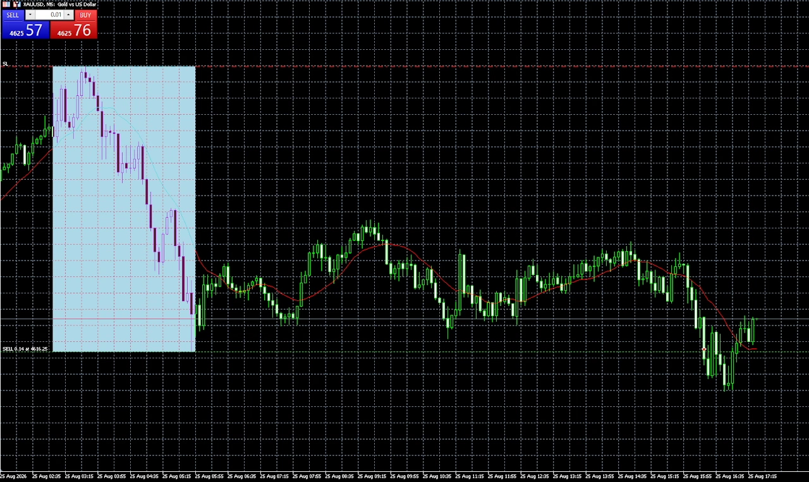
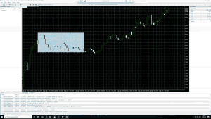
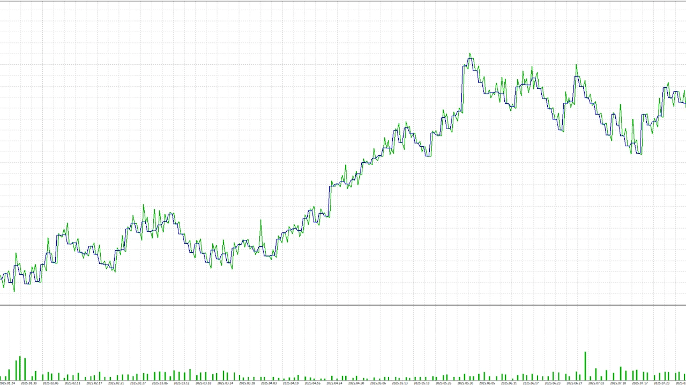

Deine Handelslogik
Session-Regeln, Indikatorbedingungen, Marktstruktur oder wilde Kombinationen: Wir formulieren eindeutige Regeln welche sich in Code packen lassen.
MQL5 · METATRADER 5
Session-Regeln, Indikatorbedingungen, Marktstruktur oder wilde Kombinationen: Wir formulieren eindeutige Regeln welche sich in Code packen lassen.
Positionsgrößen, Stop Loss, Take Profit, Trailing Stop und Limits werden passend zur vereinbarten Strategie umgesetzt.
Im MT5 lassen sich dein System mit historische Daten prüfen. Zudem kann man automatisierte Backtests laufen lassen und die Einstellungs Parameter optimieren!
Der Mensch macht Fehler, die Maschine nicht. Lass den Bot dein System handeln! Verschwende keine Zeit mehr vor dem Chart! Verpasse keine Setups mehr und entspanne dich.
Technisch ist nahezu alles möglich! Von einfachen Kombinationen von Indikatoren, bis hin zu komplexen Markt Strukturen, Smart Money Konzepten und vielen mehr!
Du hast bereits eine Pine-Script-Strategie? Ich prüfe, wie sich die Logik in MQL5 übertragen lässt. Unterschiede bei Kursdaten, Zeiteinheiten und Ausführungsmodellen werden vor der Umsetzung besprochen.
DIE PASSENDE PLATTFORM
| Dein Vorhaben | Passende Leistung |
|---|---|
| Signale & Marktstruktur im Chart sehen | TradingView-Indikator → |
| Handelsregeln als Strategie testen | TradingView-Strategie → |
| Trades direkt in MetaTrader 5 ausführen | MT5 Expert Advisor → |
Ein Beispiel aus meiner Arbeit ist eine Range-Breakout-Strategie für Gold. Der Bot kann die Range eines definierten Zeitfensters bestimmen und einen Einstieg beim Ausbruch nach festgelegten Bedingungen ausführen.

Visueller Strategietest in MetaTrader 5.


DER NÄCHSTE SCHRITT
Erzähl mir, wie du tradest. Ich helfe dir, deine Regeln in Code zu übersetzen und programmiere das für dich!
★★★★★ "Volle Empfehlung! Starke Umsetzung aller Wünsche und auch persönlich ein toller Typ! Macht richtig Spaß und gern wieder"
Google-Bewertung ansehen
★★★★★ "Michi ist ein sehr guter Programmierer! Was er für unsere Trading Community gezaubert hat ist einfach nicht von dieser Welt! Er weiß was er tut und ist dabei auch noch super sympathisch! Schenkt ihm euer Vertrauen und es wird sich lohnen!"
Google-Bewertung ansehen
★★★★★ "Es ist unfassbar, wieviel Arbeit der Indokator von Michi mir als Trader abnimmt. Setups werden automatisch identifiziert und ich muss nur noch die Trades setzen, so wie sie angezeigt werden. Außerdem werde ich per Alarm benachrichtigt, wenn das gewünschte Setup sich am bilden ist, oder ausgebildet hat. Das gibt mir die Freiheit nicht ständig am Chart sein zu müssen. Das nenne ich Freiheit!!"
Google-Bewertung ansehen
★★★★★ "Michi ist ein herausragender Pine Script Entwickler mit tiefem Verständnis für die Finanzmärkte! Sein Liquidity School Pro Indikator ist eine große Bereicherung für meinen Trading-Alltag, da er es mir ermöglicht, jedes gewünschte Setup mit passgenauen Alarmen abzubilden. Michi ist zudem äußerst freundlich und hilfsbereit und beantwortet geduldig jede Frage, die aufkommt. Dank seiner Expertise und seinem Engagement habe ich vollstes Vertrauen in ihn und empfehle ihn uneingeschränkt weiter!"
Google-Bewertung ansehen